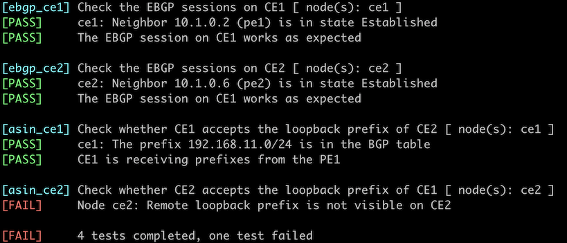

Fix AS-Path in Environments Reusing BGP AS Numbers
In the previous lab exercise exercise, you connected multiple sites using the same BGP AS number to a Service Provider network. While that works, it does require the customers to configure BGP nerd knobs that might not be supported on all devices. Wouldn’t it be better if you could fix the AS path on the Service Provider routers? That’s what you’ll accomplish in this lab exercise – you’ll configure the Provider Edge (PE) routers to replace the customer AS number with the provider AS number.

Existing Router Configuration
The routers in your lab use the following BGP AS numbers. The Provider Edge (PE) routers do not advertise local prefixes; each Customer Edge (CE) router advertises an IPv4 prefix.
| Node/ASN | Router ID | Advertised prefixes |
|---|---|---|
| AS65000 | ||
| ce1 | 192.168.10.1 | 192.168.10.1/24 |
| ce2 | 192.168.11.1 | 192.168.11.1/24 |
| AS65100 | ||
| pe1 | 10.0.0.1 | |
| pe2 | 10.0.0.2 |
Your routers have these BGP neighbors. netlab configures them automatically; if you’re using some other lab infrastructure, you’ll have to configure them manually.
| Node | Router ID / Neighbor |
Router AS/ Neighbor AS |
Neighbor IPv4 |
|---|---|---|---|
| pe1 | 10.0.0.1 | 65100 | |
| pe2 | 65100 | 10.0.0.2 | |
| ce1 | 65000 | 10.1.0.1 | |
| pe2 | 10.0.0.2 | 65100 | |
| pe1 | 65100 | 10.0.0.1 | |
| ce2 | 65000 | 10.1.0.5 |
PE1 and PE2 also run OSPF in the backbone area.
| Router | Interface | IPv4 Address | Neighbor(s) |
|---|---|---|---|
| pe1 | Loopback | 10.0.0.1/32 | |
| swp3 | 10.1.0.9/30 | pe2 | |
| pe2 | Loopback | 10.0.0.2/32 | |
| swp3 | 10.1.0.10/30 | pe1 |
Start the Lab
Assuming you already set up your lab infrastructure:
- Change directory to
session/2-asoverride - Execute netlab up (device requirements, other options)
- Log into your devices (PE1, PE2) with netlab connect and verify that they have established OSPF adjacency, an IBGP session between themselves, and the EBGP sessions with the CE routers.
Note: netlab will configure IP addressing, OSPF routing, BGP sessions, and BGP prefix advertisements on all routers. You must manually configure your routers if you’re not using netlab.
Warning
Some BGP implementations do not support the AS override functionality. For example, it’s not available on Arista EOS.
The Problem
Assuming your routers are configured correctly, you should see the customer prefixes in the BGP table on the PE routers. For example, this is how the BGP table looks on PE1 running Arista EOS:
pe1>show ip bgp | begin Network
Network Next Hop Metric AIGP LocPref Weight Path
* > 192.168.10.0/24 10.1.0.1 0 - 100 0 65000 i
* > 192.168.11.0/24 10.0.0.2 0 - 100 0 65000 i
However, the customer routers do not accept the prefixes advertised by other customer sites because the local AS number appears in the AS path. You can see the difference between received and accepted routes if you’re using Cumulus Linux or FRR on the CE routers1:
$ netlab connect ce1
Connecting to container clab-allowas-ce1, starting bash
Use vtysh to connect to FRR daemon
ce1(bash)#sudo vtysh
Hello, this is FRRouting (version 7.5+cl4.4.0u4).
Copyright 1996-2005 Kunihiro Ishiguro, et al.
ce1# show ip bgp neighbors 10.1.0.2 received-routes
BGP table version is 1, local router ID is 192.168.10.1, vrf id 0
Default local pref 100, local AS 65000
Status codes: s suppressed, d damped, h history, * valid, > best, = multipath,
i internal, r RIB-failure, S Stale, R Removed
Nexthop codes: @NNN nexthop's vrf id, < announce-nh-self
Origin codes: i - IGP, e - EGP, ? - incomplete
Network Next Hop Metric LocPrf Weight Path
*> 192.168.11.0/24 10.1.0.2 0 65100 65000 i
Total number of prefixes 1
ce1# show ip bgp neighbors 10.1.0.2 routes
ce1#
Configuration Task
Many BGP implementations have a nerd knob that replaces the neighbor AS number in the AS path with the local AS number. It’s usually configured on individual BGP sessions (per neighbor) with a command similar to neighbor as-override.
- Replace the neighbor AS number with the local AS number on EBGP sessions on PE1 and PE2
- Resend the EBGP updates from PE1 and PE2, usually using a command similar to clear ip bgp soft out
Verification
You can use the netlab validate command if you’ve installed netlab release 1.7.0 or later and use Cumulus Linux, FRR, or Arista EOS on CE routers. You’ll get this printout if you configure as-override on PE1 but not PE2.

If that command fails or you’re using another network operating system on your CE routers, check the BGP tables on CE1 and CE2. This is the printout you should get on CE1 running Cumulus Linux:
$ netlab connect ce1 --show ip bgp
Connecting to container clab-allowas-ce1, executing sudo vtysh -c "show ip bgp"
BGP table version is 2, local router ID is 192.168.10.1, vrf id 0
Default local pref 100, local AS 65000
Status codes: s suppressed, d damped, h history, * valid, > best, = multipath,
i internal, r RIB-failure, S Stale, R Removed
Nexthop codes: @NNN nexthop's vrf id, < announce-nh-self
Origin codes: i - IGP, e - EGP, ? - incomplete
Network Next Hop Metric LocPrf Weight Path
* 192.168.10.0/24 10.1.0.2 0 65100 65100 i
*> 0.0.0.0 0 32768 i
*> 192.168.11.0/24 10.1.0.2 0 65100 65100 i
Tip
The PE routers advertise the CE prefixes back to the CE routers, and the AS override functionality effectively disables the BGP loop prevention logic. You’ll usually see two copies of the local prefixes in the BGP table.
Reference Information
This lab uses the 4-router lab topology. The following information might help you if you plan to build custom lab infrastructure:
Device Requirements
- Provider routers: use any device supported by the netlab BGP and OSPF configuration modules. The device also has to support the AS override functionality.
- Customer routers: use any device supported by the netlab BGP configuration modules. The lab topology configures BGP soft reconfiguration on Cumulus Linux and FRR; you might want to configure something similar on the EBGP sessions if you use other devices as CE routers.
- You can do automated lab validation with Arista EOS, Cumulus Linux, or FRR running on the CE routers. Automated lab validation requires netlab release 1.7.0 or higher.
- Git repository contains initial CE router device configurations for Cumulus Linux.
Lab Wiring
| Link Name | Origin Device | Origin Port | Destination Device | Destination Port |
|---|---|---|---|---|
| PE1-to-CE1 | pe1 | eth1 | ce1 | swp1 |
| Unused link | pe1 | eth2 | ce2 | swp1 |
| Unused link | ce1 | swp2 | ce2 | swp2 |
| Unused link | pe2 | eth1 | ce1 | swp3 |
| PE2-to-CE2 | pe2 | eth2 | ce2 | swp3 |
| SP internal link | pe1 | eth3 | pe2 | eth3 |
Lab Addressing
| Node/Interface | IPv4 Address | IPv6 Address | Description |
|---|---|---|---|
| ce1 | 192.168.10.1/24 | Loopback | |
| swp1 | 10.1.0.1/30 | PE1-to-CE1 | |
| swp2 | Unused link | ||
| swp3 | Unused link | ||
| ce2 | 192.168.11.1/24 | Loopback | |
| swp1 | Unused link | ||
| swp2 | Unused link | ||
| swp3 | 10.1.0.5/30 | PE2-to-CE2 | |
| pe1 | 10.0.0.1/32 | Loopback | |
| eth1 | 10.1.0.2/30 | PE1-to-CE1 | |
| eth2 | Unused link | ||
| eth3 | 10.1.0.9/30 | SP internal link | |
| pe2 | 10.0.0.2/32 | Loopback | |
| eth1 | Unused link | ||
| eth2 | 10.1.0.6/30 | PE2-to-CE2 | |
| eth3 | 10.1.0.10/30 | SP internal link |
-
Arista EOS does not display routes dropped by the BGP loop prevention logic even when the BGP soft reconfiguration is configured. ↩